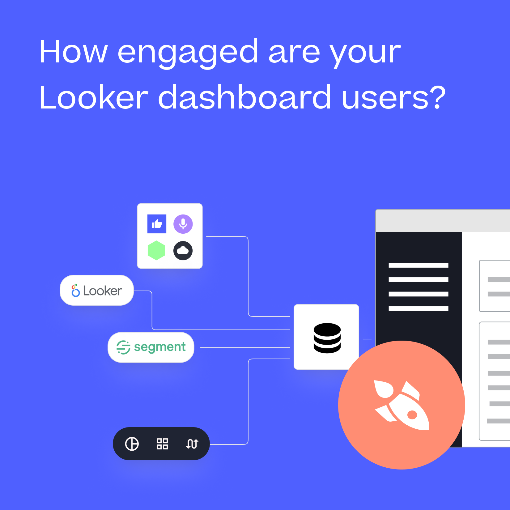

Where we are · BigQuery + dbt
The physical data model.
- Physical data model — shows how entities connect and what they contain.
- Designed without redundancy — no duplicated tables, no column repeated across places.
- Top-down approach — we understand the business's needs first, then work backwards so the structure supports corporate objectives.

© Rittman Analytics 2026T: +44 (0)208 058 5951W: rittmananalytics.com06 / 14